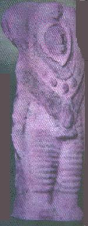

<!--#include virtual="/header.html" -->
<ul>
  <li>
    <figure class="right side">
      <figcaption>
        La statuette datant de 3000 ans
      </figcaption>
      
    </figure>
    Figurine (ci-contre) semblant représenter un homme revêtu d'une "combinaison spatiale" à la frontière de l'<a
      href="/org/ec/index.html">Equateur</a> et de la Bolivie.
  </li>
  <li>Prétendu <a href="/science/crypto/archeo/astro/enquete/dossier/Ferghana/index.html">dessin de Fergana</a>. </li>
</ul>
<!--#include virtual="/footer.html" -->
